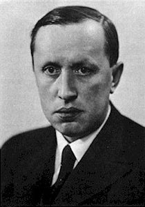

Карел Чапек.

Карел Чапек (9 января 1890 года - 25 декабря 1938 года) - чешский писатель, прозаик, драматург, переводчик и фантаст. Классик чешской литературы XXв. В 1920 г. После своей пьессы «Россумские Универсальные Роботы» принес в массы понятие «робот».
Чапек, Карел (Čapek, Karel) - чешский писатель. Родился 9 января 1890 в Мале Сватонёвице, Чехия. Изучал философию в Праге, Берлине и Париже; удостоен степени доктора философии в 1915. Мировую известность принесла Чапеку его драматургия, своим успехом обязанная умению автора рассуждать на серьезные темы с немалой долей юмора. В самой знаменитой пьесе Чапека R.U.R (R. U. R., 1921) едко высмеивается машинная – и машиноподобная – цивилизация. Написанная совместно с братом Йозефом комедия Из жизни насекомых (Ze zivota hmyzu, 1921) изобличает алчность, тунеядство, себялюбие и солдафонство. В пьесе Средство Макропулоса (Vec Makropulos, 1922) забавно доказывается утомительность вечной жизни. Пьесы Белая болезнь (Bila nemoc, 1937) и Мать (Matka, 1938) обращаются к теме диктатуры и войны, но им явно недостает юмора, столь характерного для предыдущих произведений Чапека, – видимо, потому, что они написаны в канун Второй мировой войны. Общественные вопросы, всегда занимавшие Чапека-драматурга, нашли выражение и в его романах. В Кракатит (Krakatit, 1924) изобретается взрывчатка, способная уничтожить весь мир; в Войне с саламандрами (Valka s Mloky, 1935) обученные людьми морские чудовища угрожают самому существованию человечества. Знаменитая трилогия – Гордубал (Hordubal, 1933), Метеор (Povetron, 1934), Обыкновенная жизнь (Obycejny zivot, 1935) – посвящена проблемам частной жизни. Письма из Италии (Italske listy, 1923), Английские письма (Anglicke listy, 1924), Прогулка к испанцам (Vylet do Spanel, 1930), Открытки из Голландии (Obrazky z Holandska, 1932), Путешествие на Север (Cesta na Sever, 1936) – шутливые путевые дневники. Сказки и веселые истории (Bajky a podpovidky, 1932), Дашенка, или Житие щенка (Dasenka, cili zivot stenete, 1933) и Были у меня собака и кошка (Mel jsem psa a kocku, 1939) – забавные рассказы для детей. В числе иных произведений: Адам творец (Adam Stvoritel, 1927), Фабрика Абсолюта (Tovarna na Absolutno, 1922), Беседы с Т.Г. Масариком (Hovory s TGM, 1930), Первая спасательная (Prvni parta, 1937), Вещи вокруг нас (Veci kolem nas, 1937), Рассказы из одного кармана; Рассказы из другого кармана (Povidky z jedne kapsy; Povidky z druhe kapsy, 1929), Год садовода (Zahradnikuv rok, 1929) и Как это делается (Jak se co dela, 1938).